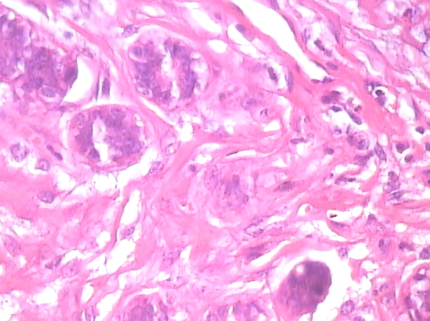
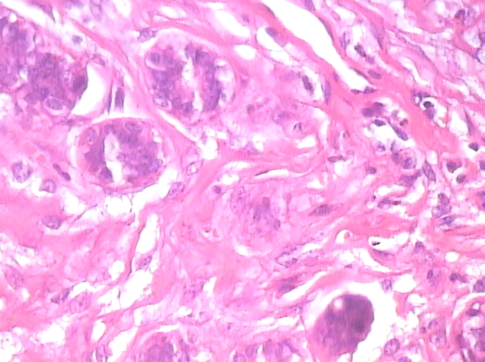

classifying benign and malignant breast tumors
[ - present]
creating a machine learning model that, given microscopic images of breast tumor cells, can classify whether those cells are benign or malignant
tools used: pytorch
[ - present]
creating a machine learning model that, given microscopic images of breast tumor cells, can classify whether those cells are benign or malignant
tools used: pytorch
[]

conducted EDA and hypothesis tests on online recipe posts to discover the significance of tags on online recipe posts, then designed a classifier to predict whether a recipe should be given a certain tag
tools used: scikit-learn, pandas
[ - ]

collected appropriate data and synthesized the information to reveal patterns between variables, then wrote a research paper and presented the findings to an audience
tools used: excel